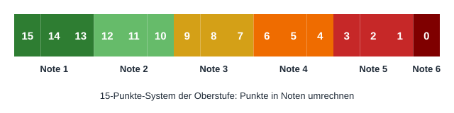

15-Punkte-System der Oberstufe: Tabelle & Umrechnung
In der Oberstufe werden Leistungen in Punkten von 15 bis 0 bewertet, nicht in Noten von 1 bis 6. Wir, die Macher von Notenrechner Online, zeigen die vollständige Umrechnungstabelle, die Logik dahinter und wie man 15 Punkte in Noten umrechnet – mit Formel und Beispiel.
Das Problem: Punkte lesen wie Noten
Viele kennen aus der Mittelstufe die Notenskala von 1 bis 6 – und stehen dann vor Punkten, die sie nicht einordnen können: Ist 9 Punkte noch eine 2? Ist 4 Punkte schon durchgefallen? Die Logik ist einfach: Jede Note umfasst genau drei Punkte, und null Punkte bedeuten die Note 6.
Die Umrechnungstabelle: 15 bis 0 Punkte
| Punkte | Note | Tendenz |
|---|---|---|
| 15 | 1 | 1+ |
| 14 | 1 | 1 |
| 13 | 1 | 1− |
| 12 | 2 | 2+ |
| 11 | 2 | 2 |
| 10 | 2 | 2− |
| 9 | 3 | 3+ |
| 8 | 3 | 3 |
| 7 | 3 | 3− |
| 6 | 4 | 4+ |
| 5 | 4 | 4 |
| 4 | 4 | 4− |
| 3 | 5 | 5+ |
| 2 | 5 | 5 |
| 1 | 5 | 5− |
| 0 | 6 | – |
Die Formel dahinter: 15 Punkte entsprechen der Note 0,7, und jeder fehlende Punkt erhöht die Note um 0,3 Stufen.

Durchgerechnete Beispiele
Wir setzen 9 Punkte in die Formel ein: Note = 0,7 + (15 − 9) × 0,3 = 0,7 + 6 × 0,3 = 0,7 + 1,8 = 2,5. Auf den ersten Blick wäre das eine 2,5 – doch das System kennt keine halben Noten: Innerhalb einer Note unterscheidet es nur Plus, glatt und Minus. Neun Punkte sind der höchste Wert im Dreierblock und entsprechen damit der Tendenz 3+ (Dezimalnote 2,7).
Formel: Note = 0,7 + (15 − 5) × 0,3 = 0,7 + 10 × 0,3 = 0,7 + 3,0 = 3,7, gerundet eine 4. In der Tabelle stehen 5 Punkte für die glatte Note 4 (Dezimalnote 4,0). Der Fall zeigt die Rundungslogik des Systems: Die Formel liefert 3,7, doch die offizielle Einordnung kennt nur die drei Stufen 4+, 4 und 4− – 5 Punkte sind exakt die Mitte und damit eine glatte 4.
Stolperfallen: Tendenz und die Null
Eine weitere Falle ist die Mitte des Systems: 7 und 8 Punkte klingen „niedrig“, sind aber mit 3− und 3 immer noch befriedigend. Erst ab 3 Punkten wird es kritisch (5+), und ab 0 Punkten ist die Leistung ungenügend. Wer sein Abitur plant, sollte außerdem wissen, dass für die Zulassung Kurse mit 0 Punkten in der Regel nicht eingebracht werden können.
Häufige Fragen
Wie viele Punkte brauche ich für eine 2?
Für eine Note 2 brauchen Sie mindestens 10 Punkte (2−), für eine glatte 2 genau 11 Punkte und für eine 2+ zwölf Punkte. Jeder Punkt entspricht 0,3 Notenstufen, deshalb liegen die drei Werte 12, 11 und 10 alle im Zweierbereich.
Was bedeuten 0 Punkte im Abitur?
Null Punkte entsprechen der Note 6 („ungenügend“). In der Regel können Kurse mit 0 Punkten nicht in die Abiturwertung eingebracht werden – bei Pflichtkursen kann das die Zulassung gefährden. Den Einzelfall unbedingt mit der Oberstufenkoordination klären.
Zählt eine 2− als Note 2 im Schnitt?
Für den Abiturschnitt zählen die exakten Punktwerte, nicht gerundete Noten. Eine 2− fließt mit 10 Punkten ein – spürbar weniger als 11 oder 12 Punkte. Wir rechnen deshalb immer mit Punkten, nicht mit Noten.
Gibt es einen Rechner für das 15-Punkte-System?
Ja – in unserem IHK-Notenschlüssel-Rechner geben Sie die Punktzahl ein und erhalten sofort Note und Tendenz; zusätzlich ermittelt er Ihren Punktedurchschnitt.
Gibt es halbe Punkte im 15-Punkte-System?
In Klausuren werden üblicherweise ganze Punkte vergeben. Die Formel liefert zwar Dezimalnoten wie 2,5, doch die offizielle Bewertung kennt nur ganze Punktwerte mit Plus-/Minus-Tendenz – 9 Punkte sind eine 3+, nicht eine 2,5.
Punktzahl eingeben, Note erhalten
Unser kostenloser Rechner wandelt jede Punktzahl des 15-Punkte-Systems sofort in Note und Tendenz um.